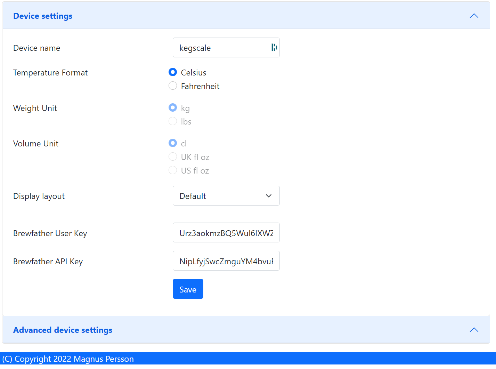

Software¶
THe software is tailored towards my personal needs and external service that I use. The software has two interfaces, one via the OLED displays and one via the web-browser.
Installation¶
To be defined.
WIFI¶
To be defined.
OLED Screens¶
The OLD screens will show the name of the beer, abv and alternate between kg and pints. The first screen will display values for keg 1 and the second for keg 2.
Index¶
This is the web page accessed by accessing the device via a web-browser. This section will show the general device information.

Current version
Shows the current software version.
Host name
Name of the device on the network.
Device ID
ESP8266 chip ID.
SSID
Name of network we are connected to.
Temperature
Temperature reading, not shown if there is no sensor.
Humidity
Humidity reading, not shown if there is no sensor.
Weights
Shows weighs for scale 1 and 2.
Pints
Shows pints left for scale 1 and 2. You need to configure the weights under the configuration page.
Configuration¶
This is where the software is configured.
{kind=link}
Device name
Set the name of the device on the network, your network needs to support mDNS.
Weight precision
How many deciamls will be shown for weight.
Brewfather user key
Brewfather user key.
Brewfather API key
Brewfather API key.
Empty keg weight
What is the weight of your empty key, two fields for keg 1 + keg 2.
Pint of beer weight
What is the weight of a pint of beer (or the normal glass you use), two fields for keg 1 + keg 2.
Beer name
Name of the beers, two fields for keg 1 + keg 2. This data can be fetched from brewfather.
Beer ABV
ABV of the beers, two fields for keg 1 + keg 2. This data can be fetched from brewfather.
Calibration¶
This is the page where you can calibrate your scales.

STEP 1 - Tare scale
The first step is to tare the scale. First select the scale from the dropdown list that you want to operate on. Make sure the scale is empty.
STEP 2 - Calculate factor
The second step is to calculate the factor used to calculate the weight. Place a thing with a known weight on the scale and enter the weight of that object. The software will then calculate the factor for estimating the weight.
Note
I need to do more testing in order to have recommendations on what is a good option for this.
STEP 3 - Validate
The third step is to validate that everything works, place anohter thing with a know weight and check the measured value. If you are satisfied then you are done.
{kind=link}